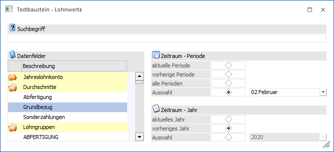
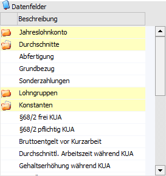
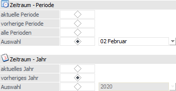

Für die Verwendung von Textbausteinen in der Lohnverrechnung A ist es zumeist erforderlich, auf abrechnungsrelevante Daten (Brutto, Netto, Durchschnitte) zuzugreifen. In diesem Fenster, das beim Bearbeiten von Textbausteinen durch Anklicken des Buttons "Werte" geöffnet werden kann, kann definiert werden, welche Werte eingefügt werden sollen.
Hinweis
Der Button "Werte" ist nur dann aktiv, wenn es sich um einen Textbaustein der Gruppe "Lohn Textbausteine" handelt.

Folgende Einstellungen stehen zur Verfügung:
Suchbegriff

Ø Suchbegriff
Die Auswahl der Datenfelder kann durch die Eingabe eines Suchbegriffs eingeschränkt werden. Die Suche erfolgt in dem Feld "Beschreibung" und wird durch Bestätigung des Begriffs ausgelöst.
Tabelle "Datenfelder"

In der Tabelle werden alle Datenbereiche angezeigt, aus denen Lohnwerte ausgewiesen werden können.
ü Jahreslohnkonto
Hier können
alle Werte aus dem Jahreslohnkonto (Brutto, Netto, SV-Beiträge etc.) abgeholt
werden.
ü Durchschnitt
Hier können die
Durchschnittswerte abgeholt werden, wobei alle Durchschnitte angeboten werden,
die auch angelegt wurden.
ü Lohngruppen
Hier können die
Lohngruppenwerte abgeholt werden, wobei alle Lohngruppen angeboten werden, die
auch angelegt wurden.
ü Konstanten
Hier kann auf alle
AN-Konstanten zugegriffen werden.
Zeitraum

Wurde ein Datenfeld ausgewählt (in der Tabelle markiert), so kann in dem Bereich "Zeitraum" jener definiert werden.
Ø Periode
Damit kann definiert werden, auf welche Periode der gewünschte Wert geholt werden soll. Zur Auswahl stehen:
ü aktuelle Periode
Die Werte
werden aus der aktuellen Abrechnungsperiode genommen. Damit hier auch ein Wert
angezeigt wird, muss in der aktuellen Periode eine Abrechnung durchgeführt
worden sein.
ü Vorherige Periode
Mit dieser
Option wird der Wert aus der letzten abgeschlossenen Abrechnungsperiode
geholt.
ü Alle Perioden
Mit dieser Option
werden alle vorhandenen Abrechnungsmonate ausgewertet.
ü Auswahl (Periode)
Wird diese
Option gewählt, dann kann aus der Auswahlliste ein fixer Monat hinterlegt
werden. Hier stehen dann nur jene Monate zur Verfügung, die auch bereits
abgerechnet wurden.
Ø Jahr
Damit kann gewählt werden, aus welchem Abrechnungsjahr die Werte geholt werden sollen. Standardmäßig wird das aktuelle Abrechnungsjahr vorgeschlagen, es kann - sofern vorhanden - auch ein alternatives Jahr gewählt werden:
ü Aktuelles Jahr
Die Werte werden
aus dem aktuellen Abrechnungsjahr genommen.
ü Vorheriges Jahr
Mit dieser
Option werden die Werte aus dem letzten Abrechnungsjahr geholt.
ü Auswahl (Jahr)
Wird diese
Option gewählt, dann kann aus der Auswahlliste das gewünschte Jahr ausgewählt
werden. Dabei werden alle Abrechnungsjahre vorgeschlagen, für welche es im
aktuellen Mandanten Abrechnungswerte gibt.
Achtung
Es ist darauf zu achten, dass Werte aus nicht Euro-Vorjahren noch in ATS ausgewiesen werden.
Buttons

Ø Ok
Durch Drücken des Buttons "Ok" bzw. der Taste F5 werden die Einstellungen gespeichert und in den Textbaustein übernommen. Als Ergebnis wird ein "Link" angezeigt (der Name des Datenfelds wird blau und unterstrichen dargestellt). Wenn noch Änderungen an dem Wert vorgenommen werden sollen, so kann das Fenster durch Anklicken des Links wieder geöffnet werden.
Ø Ende
Durch Drücken des Buttons "Ende" bzw. der Taste ESC wird das Fenster geschlossen und alle nicht gespeicherten Eingaben verworfen.